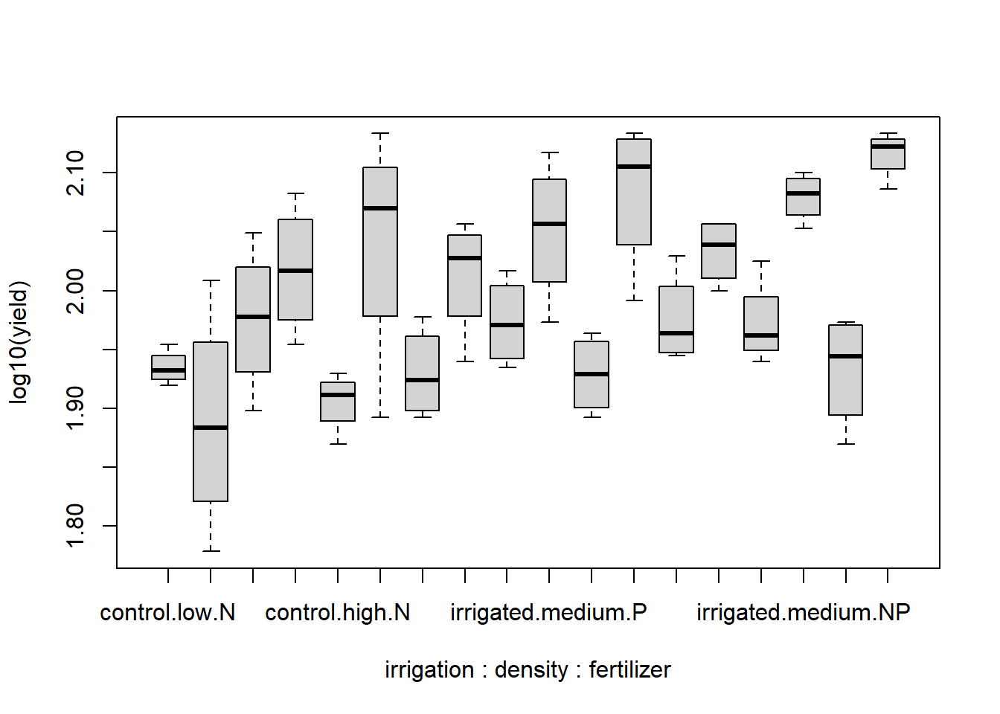

splityield <- read.delim("datasets/statistik/splityield.csv", sep = ",", stringsAsFactors = T)Stat5: Lösung 1
- Download dieses Lösungsscript via “</>Code” (oben rechts)
- Lösungstext als Download
Musterlösung Aufgabe 5.1: Split-plot ANOVA
Übungsaufgabe
(hier so ausführlich formuliert, wie dies auch in der Klausur der Fall sein wird)
- Ladet den Datensatz splityield.csv. Dieser enthält Versuchsergebnisse eines Experiments zum Ernteertrag (yield) einer Kulturpflanze in Abhängigkeit der drei Faktoren Bewässerung (irrigated vs. control), Düngung (N, NP, P) und Aussaatdichten (low, medium, high). Es gab vier ganze Felder (block), die zwei Hälften mit den beiden Bewässerungstreatments (irrigation), diese wiederum drei Drittel für die drei Saatdichten (density) und diese schliesslich je drei Drittel für die drei Düngertreatments (fertilizer) hatten.
- Ermittelt das minimal adäquate statistische Modell, das den Ernteertrag in Abhängigkeit von den angegebenen Faktoren beschreibt.
- Bitte erklärt und begründet die einzelnen Schritte, die ihr unternehmt, um zu diesem Ergebnis zu kommen. Dazu erstellt bitte ein Word-Dokument, in das ihr Schritt für Schritt den verwendeten R-Code, die dazu gehörigen Ausgaben von R, eure Interpretation derselben und die sich ergebenden Schlussfolgerungen für das weitere Vorgehen dokumentieren.
- Dieser Ablauf sollte insbesondere beinhalten:
- Überprüfen der Datenstruktur nach dem Einlesen, welches sind die abhängige(n) und welches die unabängige(n) Variablen
- Explorative Datenanalyse, um zu sehen, ob evtl. Dateneingabefehler vorliegen oder Datentransformationen vorgenommen werden sollten
- Auswahl und Begründung eines statistischen Verfahrens
- Bestimmung des vollständigen/maximalen Models
- Selektion des/der besten Models/Modelle
- Generieren aller Zahlen, Statistiken und Tabellen, die für eine wiss. Ergebnisdarstellung benötigt werden
- Formuliert abschliessend einen Methoden- und Ergebnisteil (ggf. incl. adäquaten Abbildungen) zu dieser Untersuchung in der Form einer wissenschaftlichen Arbeit (ausformulierte schriftliche Zusammenfassung, mit je einem Absatz von ca. 60-100 Worten, resp. 3-8 Sätzen für den Methoden- und Ergebnisteil). D. h. alle wichtigen Informationen sollten enthalten sein, unnötige Redundanz dagegen vermieden werden.
- Abzugeben sind am Ende (a) Ein lauffähiges R-Skript; (b) begründeter Lösungsweg (Kombination aus R-Code, R Output und dessen Interpretation) und (c) ausformulierter Methoden- und Ergebnisteil (für eine wiss. Arbeit).
Kommentierter Lösungsweg
# Checken der eingelesenen Daten
splityield
## X yield block irrigation density fertilizer
## 1 1 90 A control low N
## 2 2 95 A control low P
## 3 3 107 A control low NP
## 4 4 92 A control medium N
## 5 5 89 A control medium P
## 6 6 92 A control medium NP
## 7 7 81 A control high N
## 8 8 92 A control high P
## 9 9 93 A control high NP
## 10 10 80 A irrigated low N
## 11 11 87 A irrigated low P
## 12 12 100 A irrigated low NP
## 13 13 121 A irrigated medium N
## 14 14 110 A irrigated medium P
## 15 15 119 A irrigated medium NP
## 16 16 78 A irrigated high N
## 17 17 98 A irrigated high P
## 18 18 122 A irrigated high NP
## 19 19 83 B control low N
## 20 20 80 B control low P
## 21 21 95 B control low NP
## 22 22 98 B control medium N
## 23 23 98 B control medium P
## 24 24 106 B control medium NP
## 25 25 74 B control high N
## 26 26 81 B control high P
## 27 27 74 B control high NP
## 28 28 102 B irrigated low N
## 29 29 109 B irrigated low P
## 30 30 105 B irrigated low NP
## 31 31 99 B irrigated medium N
## 32 32 94 B irrigated medium P
## 33 33 123 B irrigated medium NP
## 34 34 136 B irrigated high N
## 35 35 133 B irrigated high P
## 36 36 132 B irrigated high NP
## 37 37 85 C control low N
## 38 38 88 C control low P
## 39 39 88 C control low NP
## 40 40 112 C control medium N
## 41 41 104 C control medium P
## 42 42 91 C control medium NP
## 43 43 82 C control high N
## 44 44 78 C control high P
## 45 45 94 C control high NP
## 46 46 60 C irrigated low N
## 47 47 104 C irrigated low P
## 48 48 114 C irrigated low NP
## 49 49 90 C irrigated medium N
## 50 50 118 C irrigated medium P
## 51 51 113 C irrigated medium NP
## 52 52 119 C irrigated high N
## 53 53 122 C irrigated high P
## 54 54 136 C irrigated high NP
## 55 55 86 D control low N
## 56 56 78 D control low P
## 57 57 89 D control low NP
## 58 58 79 D control medium N
## 59 59 86 D control medium P
## 60 60 87 D control medium NP
## 61 61 85 D control high N
## 62 62 89 D control high P
## 63 63 83 D control high NP
## 64 64 73 D irrigated low N
## 65 65 114 D irrigated low P
## 66 66 114 D irrigated low NP
## 67 67 109 D irrigated medium N
## 68 68 131 D irrigated medium P
## 69 69 126 D irrigated medium NP
## 70 70 116 D irrigated high N
## 71 71 136 D irrigated high P
## 72 72 133 D irrigated high NPMan sieht, dass das Design vollkommen balanciert ist, d.h. jede Kombination irrigation density fertilizer kommt genau 4x vor (in jedem der vier Blöcke A-D einmal).
str(splityield)
## 'data.frame': 72 obs. of 6 variables:
## $ X : int 1 2 3 4 5 6 7 8 9 10 ...
## $ yield : int 90 95 107 92 89 92 81 92 93 80 ...
## $ block : Factor w/ 4 levels "A","B","C","D": 1 1 1 1 1 1 1 1 1 1 ...
## $ irrigation: Factor w/ 2 levels "control","irrigated": 1 1 1 1 1 1 1 1 1 2 ...
## $ density : Factor w/ 3 levels "high","low","medium": 2 2 2 3 3 3 1 1 1 2 ...
## $ fertilizer: Factor w/ 3 levels "N","NP","P": 1 3 2 1 3 2 1 3 2 1 ...
summary(splityield)
## X yield block irrigation density fertilizer
## Min. : 1.00 Min. : 60.00 A:18 control :36 high :24 N :24
## 1st Qu.:18.75 1st Qu.: 86.00 B:18 irrigated:36 low :24 NP:24
## Median :36.50 Median : 95.00 C:18 medium:24 P :24
## Mean :36.50 Mean : 99.72 D:18
## 3rd Qu.:54.25 3rd Qu.:114.00
## Max. :72.00 Max. :136.00
splityield$density <- ordered(splityield$density, levels = c("low", "medium", "high"))
splityield$density
## [1] low low low medium medium medium high high high low
## [11] low low medium medium medium high high high low low
## [21] low medium medium medium high high high low low low
## [31] medium medium medium high high high low low low medium
## [41] medium medium high high high low low low medium medium
## [51] medium high high high low low low medium medium medium
## [61] high high high low low low medium medium medium high
## [71] high high
## Levels: low < medium < highMan sieht, dass die Variable yield metrisch ist, während die vier anderen Variablen schon korrekt als kategoriale Variablen (factors) kodiert sind
# Explorative Datenanalyse (auf Normalverteilung, Varianzhomogenität)
boxplot(yield ~ fertilizer, data = splityield)
boxplot(yield ~ irrigation, data = splityield)
boxplot(yield ~ density, data = splityield)
boxplot(yield ~ irrigation * density * fertilizer, data = splityield)Die Boxplots sind generell hinreichend symmetrisch, so dass man davon ausgehen kann, dass keine problematische Abweichung von der Normalverteilung vorliegt. Die Varianzhomogenität sieht für den Gesamtboxplot sowie für fertilizer und density bestens aus, für irrigation und für die 3-fach-Interaktion deuten sich aber gewisse Varianzheterogenitäten an, d. h. die Boxen (Interquartil-Spannen) sind deutlich unterschiedlich lang. Da das Design aber vollkommen „balanciert“ war, wie wir von oben wissen, sind selbst relativ stark divergierende Varianzen nicht besonders problematisch. Der Boxplot der Dreifachinteraktion zeigt zudem, dass grössere Varianzen (~Boxen) mal bei kleinen, mal bei grossen Mittelwerten vorkommen, womit wir bedenkenlos weitermachen können (Wenn die grossen Varianzen immer bei grossen Mittelwerten aufgetreten wären, hätten wir eine log- oder Wurzeltransformation von yield in Betracht ziehen müssen).
boxplot(log10(yield) ~ irrigation * density * fertilizer, data = splityield) # bringt keine Verbesserung
aov.1 <- aov(yield ~ irrigation * density * fertilizer + Error(block/irrigation/density),
data = splityield)Das schwierigste an der Analyse ist hier die Definition des Splitt-Plot ANOVA-Modells. Hier machen wir es mit der einfachsten Möglichkeit, dem aov-Befehl. Um diesen richtig zu spezifieren, muss man verstanden haben, welches der „random“-Faktor war und wie die „fixed“ factors ineinander geschachtelt waren. In diesem Fall ist block der random Faktor, in den zunächst irrigation und dann density geschachtelt sind (die unterste Ebene fertilizer muss man nicht mehr angeben, da diese in der nächsthöheren nicht repliziert ist).
(Übrigens: das simple 3-faktorielle ANOVA-Modell aov(yield~irrigationdensityfertilizer,data=splityield) würde unterstellen, dass alle 72 subplot unabhängig von allen anderen angeordnet sind, also nicht in Blöcken. Man kann ausprobieren, wie sich das Ergebnis mit dieser Einstellung unterscheidet)
summary(aov.1)
##
## Error: block
## Df Sum Sq Mean Sq F value Pr(>F)
## Residuals 3 194.4 64.81
##
## Error: block:irrigation
## Df Sum Sq Mean Sq F value Pr(>F)
## irrigation 1 8278 8278 17.59 0.0247 *
## Residuals 3 1412 471
## ---
## Signif. codes: 0 '***' 0.001 '**' 0.01 '*' 0.05 '.' 0.1 ' ' 1
##
## Error: block:irrigation:density
## Df Sum Sq Mean Sq F value Pr(>F)
## density 2 1758 879.2 3.784 0.0532 .
## irrigation:density 2 2747 1373.5 5.912 0.0163 *
## Residuals 12 2788 232.3
## ---
## Signif. codes: 0 '***' 0.001 '**' 0.01 '*' 0.05 '.' 0.1 ' ' 1
##
## Error: Within
## Df Sum Sq Mean Sq F value Pr(>F)
## fertilizer 2 1977.4 988.7 11.449 0.000142 ***
## irrigation:fertilizer 2 953.4 476.7 5.520 0.008108 **
## density:fertilizer 4 304.9 76.2 0.883 0.484053
## irrigation:density:fertilizer 4 234.7 58.7 0.680 0.610667
## Residuals 36 3108.8 86.4
## ---
## Signif. codes: 0 '***' 0.001 '**' 0.01 '*' 0.05 '.' 0.1 ' ' 1Wir bekommen p-Werte für die drei Einzeltreatments, die drei 2-fach-Interaktionen und die 3- fach Interaktion. Keinen p-Wert gibt es dagegen für block, da dieser als „random“ Faktor spezifiziert wurde. Signifikant sind für sich genommen irrigation und fertilizer sowie die Interaktionen irrigation:density und irrigation:fertilizer.
# Modelvereinfachung
aov.2 <- aov(yield ~ irrigation + density + fertilizer + irrigation:density + irrigation:fertilizer +
density:fertilizer + Error(block/irrigation/density), data = splityield)
summary(aov.2)
##
## Error: block
## Df Sum Sq Mean Sq F value Pr(>F)
## Residuals 3 194.4 64.81
##
## Error: block:irrigation
## Df Sum Sq Mean Sq F value Pr(>F)
## irrigation 1 8278 8278 17.59 0.0247 *
## Residuals 3 1412 471
## ---
## Signif. codes: 0 '***' 0.001 '**' 0.01 '*' 0.05 '.' 0.1 ' ' 1
##
## Error: block:irrigation:density
## Df Sum Sq Mean Sq F value Pr(>F)
## density 2 1758 879.2 3.784 0.0532 .
## irrigation:density 2 2747 1373.5 5.912 0.0163 *
## Residuals 12 2788 232.3
## ---
## Signif. codes: 0 '***' 0.001 '**' 0.01 '*' 0.05 '.' 0.1 ' ' 1
##
## Error: Within
## Df Sum Sq Mean Sq F value Pr(>F)
## fertilizer 2 1977 988.7 11.828 9.21e-05 ***
## irrigation:fertilizer 2 953 476.7 5.703 0.00662 **
## density:fertilizer 4 305 76.2 0.912 0.46639
## Residuals 40 3344 83.6
## ---
## Signif. codes: 0 '***' 0.001 '**' 0.01 '*' 0.05 '.' 0.1 ' ' 1
aov.3 <- aov(yield ~ irrigation + density + fertilizer + irrigation:density + irrigation:fertilizer +
Error(block/irrigation/density), data = splityield)
summary(aov.3)
##
## Error: block
## Df Sum Sq Mean Sq F value Pr(>F)
## Residuals 3 194.4 64.81
##
## Error: block:irrigation
## Df Sum Sq Mean Sq F value Pr(>F)
## irrigation 1 8278 8278 17.59 0.0247 *
## Residuals 3 1412 471
## ---
## Signif. codes: 0 '***' 0.001 '**' 0.01 '*' 0.05 '.' 0.1 ' ' 1
##
## Error: block:irrigation:density
## Df Sum Sq Mean Sq F value Pr(>F)
## density 2 1758 879.2 3.784 0.0532 .
## irrigation:density 2 2747 1373.5 5.912 0.0163 *
## Residuals 12 2788 232.3
## ---
## Signif. codes: 0 '***' 0.001 '**' 0.01 '*' 0.05 '.' 0.1 ' ' 1
##
## Error: Within
## Df Sum Sq Mean Sq F value Pr(>F)
## fertilizer 2 1977 988.7 11.924 7.28e-05 ***
## irrigation:fertilizer 2 953 476.7 5.749 0.00605 **
## Residuals 44 3648 82.9
## ---
## Signif. codes: 0 '***' 0.001 '**' 0.01 '*' 0.05 '.' 0.1 ' ' 1Jetzt muss man nur noch herausfinden, wie irrigation und fertilizer wirken und wie die Interaktionen aussehen. Bei multiplen ANOVAs macht man das am besten visuell:
# Visualisierung der Ergebnisse
boxplot(yield ~ fertilizer, data = splityield)boxplot(yield ~ irrigation, data = splityield)
interaction.plot(splityield$fertilizer, splityield$irrigation, splityield$yield,
xlab = "fertilizer", ylab = "mean of splityield", trace.label = "irrigation")interaction.plot(splityield$density, splityield$irrigation, splityield$yield, xlab = "fertilizer",
ylab = "mean of splityield", trace.label = "irrigation")